| 概要 | 地図 | |
| 淡いヒント集 | ヒント集 | 的確なヒント集 |
| 攻略最短ルート | Syberia 攻略へ |
| 場所選択に戻る |
|
船牽引のイベント 機関車のテラスを左へ行き、プラットホームへ。 プラットホームから右へ進み、ゼンマイを巻く装置を確認し、戻る。 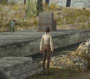 オスカーと会話をする。 機関車を降り、左へ進み、歩道橋へ行く。 歩道橋の踊り場を右へすすみ、駅の出入り口へ行く。 駅を出て、右へ進み、大学へ行く。 大学内部のマンモスの骨格がある場所を右へ進み、突き当たりの扉へ入る。 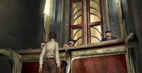 学長たちに話しかけ、「ケイト」、「機関車」、「ハンス」、を選択する。 駅の出入り口へ戻る。 駅の出入り口を右へ進み、船の前へ行く。 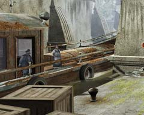 船の上にいる人に話しかけ、「ヘルプ」を選択する。 大学の学長たちに話しかけ、「お金」を選択。 マンモスの骨格がある場所を右に行った所にある扉を開け、図書館へ行く。 図書館に入ってすぐの場所を右へ進む。 本棚にハシゴがかかっているので登り、植物とキノコの本を入手し読む。 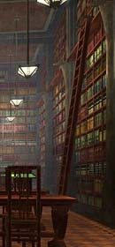 図書館の階段を下り、学習室へ行く。 一番右下の机にある、アマゾンに関する本を入手し読む。 駅の歩道橋にいき、踊り場を左下へ進む。 奥へ進むと、駅長がいるので話しかけ、「ソービニヨン葡萄」を選択する。 駅長のいる付近にフックがあるので拾う。 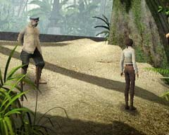 駅の出入り口付近の歩道橋に駅長がいるので、話しかけ、「ソービニヨン葡萄」を選択する。 大学校内へ入る。 マンモスの骨格がある場所を右へ進む。 ポンス教授がいるので、「ソービニヨン葡萄」、「ハンス」を選択する。 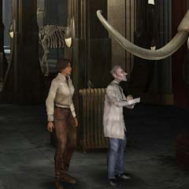 学長の部屋へ行く。 学長たちに話しかけ「ソービニヨン葡萄」を選択する。 駅長のいる場所に戻り、彼に話しかけ「ソービニヨン葡萄」を選択する。 歩道橋の踊り場を左上に行き、プラットホームへ降りる。 木が生い茂る道を進み、学長と会話をする。 奥の開いている扉へ進み、駅の外へ出る。 奥へ進むと、葡萄の木があるので、ソービニヨン葡萄を入手する。 機関車内部へ行く。 貴重品を置く部屋へ行き、マンモスの人形を持つ。 駅の出入り口付近の歩道橋で、駅長がワインをくれる。 大学に行き、ポンス教授にマンモスの人形を渡す。 廊下の突き当たりにある部屋(ポンス教授の部屋)に入る。 入り口の左にある棚を調べ、ボイスシリンダーを入手。 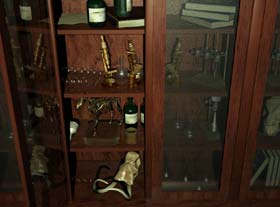 おうどう色の顕微鏡がある実験台を調べ、実験用バサミとヤンガラコーラ粉末を入手。 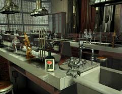 機関車のテラスを右へ行き、階段の前にいる鳥に対しソービニヨン葡萄を使う。 階段を上がり、鳥のカラクリ人形を調べる。 実験用バサミを使い、カッコウの卵を入手。 大学入り口の、池に囲まれた建物へ向かう。 扉に着いている天秤の反対側に、カッコウの卵を置く。 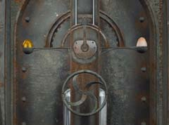 扉のハンドルを回し、扉を開く。 建物の中に入り、ハシゴをつたって下へ行く。 装置の前にあるレバーを引き、演奏用カラクリ人形を動かす。 学長の部屋に行く。 学長たちに話しかけ、「お金」を選択する。 (学長たちからお金をもらう) 船のある場所に行く。 船にいる人にお金を渡す。 船にいる人に話しかけ、「ヘルプ」、「ミッション」を選択する。 船の船長から、水門の鍵をもらう。 駅の出入り口を左上に行き、水路の横のある装置を調べる。 水門の鍵を使い、装置のパネルを開く。 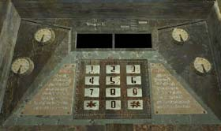 「42*」の順にボタンを押し、水門を開く。 船のある場所に戻る。 船にいる人に話しかけ、「ロック」を選択する。 水路横の装置にもどり、「41*」の順にボタンを押し、水門を閉じる。 歩道橋の踊り場を右上に進み、プラットホームに降りる。 奥に進み、停泊している船のある場所に行く。 船の人に話しかけ、「ミッション」、「ヘルプ」の順に選択。 (船の船長が鎖を投げる) 鎖に対して、フックを使用する。 (機関車が動く) 機関車のテラスへつながる場所に移動する。 (ポンス教授から電話がある) 大学校内へ行く。 マンモスの骨格横の階段を登る。 奥にある、講義室へ行く。 (ポンス教授の講義を聞く) ポンス教授の部屋へ行き、マンモスの人形と講義プリントのコピーを入手。 機関車へ戻る。 |
|
機関車出発のイベント 機関車のテラスを右へ進む。 (機関車を降りると、左下にゼンマイを巻く装置がある) 装置のハンドルを回し、ねじ巻きを出す。 装置のレバーを引き、機関車のゼンマイを巻く。 装置のハンドルを回し、ねじ巻きを戻す。 機関車に戻る。 貴重品を置く部屋に行き、中央の台に対し、ボイスシリンダーを使う。 (ムービーが流れる) 右下の机にマンモスの人形を置く。 オスカーに話しかける。 (機関車が少し進む) オスカーに話しかけ、「ミッション」を選択する。 機関車のテラスを左へ降りる。 近くにある建物へ向かう。 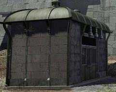 オスカーに話しかけ、「ミッション」を選択する。 建物の裏側へ周り、砦にある扉へ入る。 階段を登り、左下へ進む。 突き当たりの扉に入る。 部屋の中にいる大佐に話しかける。 望遠鏡を調べ、右側のボタンを3回押しピントを合わせる。 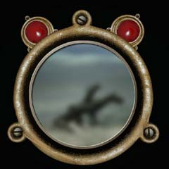 右下にある机を調べる。 机に置いてあるメガネを調べる。 机に置いてあるグラスに対し、ワインとヤンガラコーラ粉末を使う。 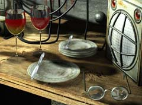 (大佐がワインを飲み、望遠鏡を見る) 大佐がビザをくれる。 砦の外に出て、オスカーのいる建物へ向かう。 窓口に対してビザを使用する。 オスカーから切符をもらい、機関車に戻る。 オスカーに切符を渡す。 機関車が出発する。 |
| 場所選択に戻る |
| 概要 | 地図 | |
| 淡いヒント集 | ヒント集 | 的確なヒント集 |
| 攻略最短ルート | Syberia 攻略へ |